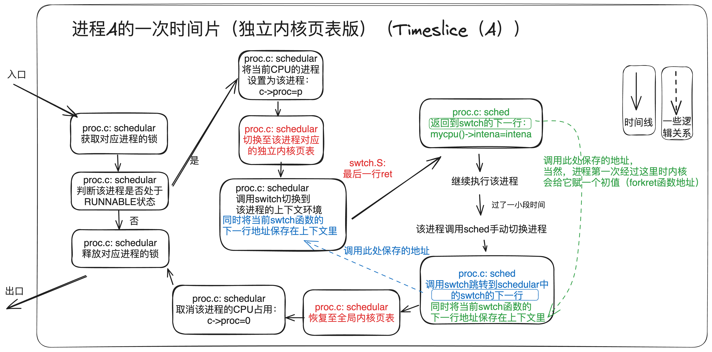

实验实现¶
这里，我们将对一些实现的细节做一定的提醒。但是完整的流程需要自己把握，我们 不会给出每一步实现步骤 。因此，最重要的还是阅读 “实验原理” 内容，得出自己的解决方案，然后参考 ”实验实现“ 这部分的内容。
值得注意的是，xv6的代码是可以参考的，可以看看相关实验原理是怎么实现的。同时，还可以插桩，使用printf等方法看看具体的内容。同时，还可以阅读 xv6 指导书，看看背后的设计机理。
温馨提示
本次实验的后两个任务非常硬核，但真正凸显了操作系统的魅力：）虽然最后一个任务的分值不多，我们依然建议你努力尝试，如果能坚持做完，就一定会对操作系统的内存管理有更高层次的认知。
本次实验 你可能会用到很多kernel/vm.c中的函数 ，它们有比较完善的注释，请仔细阅读理解。
0. 任务零：回答问题¶
回答问题
任务开始之前，我们应该先要首先回答一些原理性的问题，这部分应该被包含在实验报告中：
-
查阅资料，简要阐述页表机制为什么会被发明，它有什么好处？
-
按照步骤，阐述SV39标准下，给定一个64位虚拟地址为0xFFFFFFE789ABCDEF的时候，是如何一步一步得到最终的物理地址的？（页表内容可以自行假设）
-
我们注意到，SV39标准下虚拟地址的L2, L1, L0 均为9位。这实际上是设计中的必然结果，它们只能是9位，不能是10位或者是8位，你能说出其中的理由吗？（提示：一个页目录的大小必须与页的大小等大）
-
在“实验原理”部分，我们知道SV39中的39是什么意思。但是其实还有一种标准，叫做SV48，采用了四级页表而非三级页表，你能模仿“实验原理”部分示意图，画出SV48页表的数据结构和翻译的模式图示吗？（SV39原图如下）

1. 任务一 ：打印页表¶
本任务中，你需要加入 页表打印功能 ，来帮助你在之后的实验中进行debug。
void vmprint(pagetable_t pgtbl)
1.1 流程¶
Step 1 ：更新本地代码，切换到pgtbl分支。
Step 2 ：理解页表的原理。
Step 3 ：实现 vmprint() ，并在 exec() 函数中插入语句 if(p->pid==1) vmprint(p->pagetable)， 这条语句插在 exec.c 中 return argc 代码之前，即在第一个进程启动时打印页表信息。
拓展阅读：xv6第一个进程
我们从xv6的启动来分析：
- 上电后，先运行ROM的bootloader，bootloader再加载xv6内核到内存0x80000000处，然后从xv6内核的
_entry开始。那为什么不加载到0x0地址呢？原因是0x0~0x80000000之间包含了I/O设备，详见《XV6 book》Figure3.3。 _entry用于设置C代码的运行指定栈，完成后就跳转到start函数执行C代码。start函数处于机器模式下，初始化计时器中断，为切换到管理模式做好准备，然后到main函数开始执行。main函数初始化一些设备和子系统，调用userinit来创建第一个进程。- 第一个进程执行了一个小程序
user/initcode.S，通过系统调用exec执行一个新的程序user/init。 user/init创建了一个控制台设备文件，并作为文件描述符0，1，2来打开它。之后在for(;;)无限循环中启动shell，并处理僵尸进程。这样，系统就启动了。
Step 4 ：启动测试程序进行测试。
1.2 实现¶
-
把
vmprint()放在kernel/vm.c。 -
可以使用
kernel/riscv.h中尾部的宏定义 ，比如：
| kernel/riscv.h | |
|---|---|
1 2 3 4 5 6 7 8 9 10 11 12 13 | |
kernel/vm.c中的函数freewalk()能帮助你理解遍历页表的过程。
| kernel/vm.c | |
|---|---|
1 2 3 4 5 6 7 8 9 10 11 12 13 14 15 16 17 18 19 20 21 22 23 24 25 26 | |
-
在
kernel/defs.h中定义vmprint()的接口，这样你才能在exec()中使用它。 -
使用
printf()打印页表数据中的指针时，你可以直接使用%p标示。 - 建议参考VSCode图形化调试指南(二)——系统调用，进入QEMU界面的console，输入
info mem获取页表，可用于对比你自己打印的页表与系统中的页表是否一致。
2 任务二 独立内核页表¶
我们需要 将共享内核页表改成独立内核页表 ，使得每个进程拥有自己独立的内核页表。
2.1 （一种可参考的）流程¶
实验说明
以下给同学提供了一种可参考的实验解决方案，但它并不是唯一的解决方案。如果你有更好的方法也是可以的，只要能够通过实验测评即可。
Step 1 ：修改kernel/proc.h中的 struct proc， 增加两个新成员：pagetable_t k_pagetable;和uint64 kstack_pa;，分别用于给每个进程中设置一个内核独立页表和内核栈的物理地址。
Step 2 ：仿照kvminit() 函数重新写一个创建内核页表的函数。
- 为进程分配内核页表的一种解决方案 ：不要修改全局的内核页表（kernel/vm.c中的
pagetable_t kernel_pagetable），而是直接创建一个新的内核页表，并将其地址k_pagetable返回。实现的时候不要映射CLINT，否则会在任务三发生地址重合问题。
Step 3 ：修改procinit函数。procinit()是在系统引导时（见kernel/main.c的main函数），用于给进程分配内核栈的物理页并在页表建立映射。
- 参考优化方法 ：把
procinit()中内核栈的物理地址pa拷贝到PCB新增的成员kstack_pa中，同时还需要保留内核栈在全局页表kernel_pagetable的映射，然后在Step 4allocproc()中再把它映射到进程的内核页表里。关于内核栈说明，见实验原理 3.4.
为什么要保留初始内核页表？
保留原有的kvminit()以及kernel/vm.c中的kernel_pagetable，因为有些时候CPU可能并未执行用户进程。
Step 4 ：修改allocproc函数。allocproc()会在系统启动时被第一个进程和fork调用。在allocproc函数里调用Step 2 创建的函数设置内核页表，并且参考借鉴kvmmap函数将Step 3 设置的内核栈映射到页表k_pagetable里。
allocproc函数功能说明
在进程表中查找空闲PCB，如果找到，初始化在内核中运行所需的状态，并保持p->lock返回。如果没有空闲PCB，或者内存分配失败，则返回0。
关于内核栈映射
注意，要保证在每一个进程的内核页表中映射该进程的内核栈。xv6本会在 procinit() 中分配内核栈的物理页并在页表建立映射。但是现在，应该在allocproc()中实现该功能，因为执行procinit()的时候进程的内核页表还未被创建。你可以在procinit()中只保留内存的分配，但在allocproc()中完成映射。
Step 5 ：修改调度器（scheduler），使得切换进程的时候切换内核页表。
-
参考方法 ：在进程切换的同时也要切换页表将其放入寄存器
satp中，请借鉴kvminithart()的页表载入方式），在调用w_satp()之后调用sfence_vma()，具体原理可查阅实验原理的3.3 内核对用户空间的访问。 -
无进程运行的适配 ：当目前没有进程运行的时候，
scheduler()应该要satp载入全局的内核页表kernel_pagetable(kernel/vm.c)。 -
关于
scheduler调度器，可以参考HITSZ操作系统课程组讲解XV6（三）内存管理
这里我们给出一个调度器内的页表切换流程图，同学们可以对照实验原理部分的原版xv6的调度器流程比对观察区别：

需要注意的是：调度器作为一个永不返回的程序，其运行也需要页表的支持，所以同学们需要实现方框中红色字体的部分，这样可以使得 每个进程都运行在自己的内核独立页表的支持下 ，调度器运行在全局内核页表的支持下 ，不会出现地址映射混乱的情况。
Step 6 ：当进程结束的时候，你需要修改freeproc()函数来释放对应的内核页表。你需要找到 释放页表但不释放叶子页表指向的物理页帧 的方法。你可参考kernel/vm.c中的freewalk，其用于释放整个页表，但要求叶子页表的页项已经被清空。
- 虽然我们为每个进程引入了内核页表，但是内核的代码和数据都还是唯一的。这意味着，在各个内核页表的叶子页表中，页表项指向了共享的物理页，如下图所示：

- 因此，在我们释放某个进程的内核页表的时候，不应该把这个共享物理页帧释放，否则会产生非常严重的后果！
Step 7 ：通过usertests和kvmtest测试。
2.2 实现¶
这里有必要提醒一下同学，要以最简单的方法以及工程量最小的方法实现，最好不要因为优化等问题，大改内核机制。
- 好好利用
vmprint()来帮助debug。 - 页表的bug通常会导致映射缺失的traps，访存失败，指令运行错误等报错。如果 内核 缺失了地址映射造成了页缺失（page fault），通常会打印个
sepc=0x00000000XXXXXXXX，这代表的是出错时pc的值，你可以查kernel/kernel.asm看看 对应地址 的代码的含义。 可参考常见问题来找bug：） - 你的实现可以修改原有的函数或者是新增函数，最好放在
kernel/vm.c +kernel/proc.c中，但是 千万不要修改kernel/vmcopyin.c +kernel/stats.c + user/usertests.c + user/stats.c。
3 任务三 简化软件模拟地址翻译¶
具体要求
我们需要 在独立内核页表加上用户页表的映射，同时替换 copyin()/copyinstr() 为 copyin_new()/copyinstr_new() ，使得内核能够不必花费大量时间，用软件模拟的方法一步一步遍历页表，而是直接利用硬件。
3.1 （一种可参考的）流程¶
实验说明
以下给同学提供了一种可参考的实验解决方案，但它并不是唯一的解决方案。如果你有更好的方法也是可以的，只要能够通过实验测评即可。
Step 1 ：写一个sync_pagetable函数把进程的用户页表映射到内核页表中，同时在defs.h中声明。
-
推荐一种较为优雅的实现方法 ：内核页表直接共享用户页表的叶子页表，即内核页表中次页表的部分目录项直接指向用户页表的叶子页表。这样可以不必将用户页表的页表项全部复制进内核页表，也不必修改页表项标志位，简化实现的同时也可以提升性能，但在页表回收的时候需要避免重复回收。
-
提示：前面已经提到用户地址空间的范围为0x0-0xC000000，见“实验原理 3.5”。试计算，多少个次级页表项就能涵盖整个用户地址空间？

Step 2 ：用函数 copyin_new() （在 kernel/vmcopyin.c中定义）代替 copyin() （在 kernel/vm.c中定义）。即删除copyin()原来的实现方案，直接在copyin()里调用函数 copyin_new() 。在做完所有修改，确保程序 能运行 copyin_new() 之后再用 copyinstr_new() 以代替 copyinstr()。
Step 3 ：在独立内核页表加上用户页表的映射，以保证刚刚替换地新函数能够使用。注意独立内核页表的用户页表的映射的标志位的选择。标志位User一旦被设置，内核就不能访问该虚拟地址了。
- 推荐方案 ：
- 在调用
copyin_new()/copyinstr_new()之前修改sstatus寄存器的SUM位：w_sstatus(r_sstatus() | SSTATUS_SUM);
- 在调用
copyin_new()/copyinstr_new()之后去掉sstatus寄存器的SUM位：w_sstatus(r_sstatus() & ~SSTATUS_SUM);
Step 4 ：在独立内核页表加上用户页表的映射的时候，每一次用户页表被修改了映射的同时，都要修改对应独立内核页表的相应部分保持同步。这通常在fork(), exec(), sbrk()中发生，其中sbrk()调用growproc()来实现内存分配或回收。也就是，需要在fork()、exec()和growproc()这三个函数里将改变后的进程页表同步（调用sync_pagetable函数）到内核页表中。
Step 5 ：注意：第一个进程也需要将用户页表映射到内核页表中（调用sync_pagetable函数），见kernel/proc.c: userinit()。
Step 6 ：通过 usertests, make grade。
3.2 实现¶
-
注意独立内核页表的用户页表的映射的 标志位 的选择。（标志位User一旦被设置，内核就不能访问该虚拟地址了）
-
再次提醒地址重合问题，见“实验原理 3.5”.